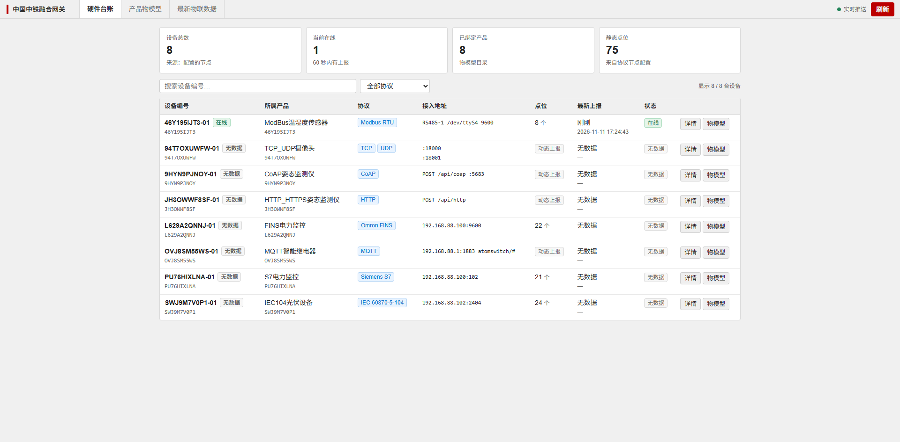
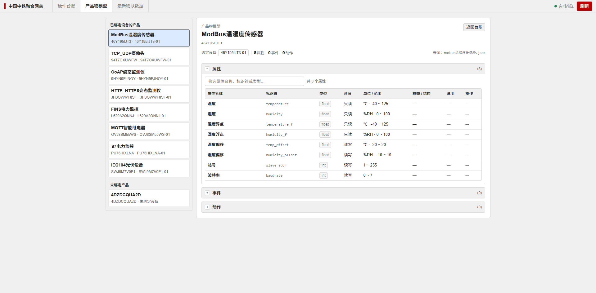

信创底座与智能化演进
自主可控的第一步，是把底座换掉
核心存储按信创要求选型：国产时序库 TDengine + 开源关系型数据库
| 存储 | 放什么 | 选型 | 信创属性 |
|---|---|---|---|
| 时序库 | 遥测、事件，按时间窗查询 | 国产 TDengine，一设备一子表 | 国产数据库，源码可控 |
| 关系型数据库 | 设备、产品、物模型、规则配置 | 开源关系型数据库 | 开源可自主部署，无商业授权 |
平台网关、时序数仓、关系型数据库的扩容方式
| 核心组件 | 职责 | 扩容方式 |
|---|---|---|
| 平台网关 | 设备接入、协议解析、规则处理与消息转发 | 加实例 / 加副本，前置负载均衡 |
| 时序数仓 | 遥测与事件存储、按时间窗查询 | 加节点 / 加副本，按时间分区 |
| 关系型数据库 | 设备与凭证、产品与物模型、规则配置 | 加实例 / 读写分离，按需升配 |
按瓶颈所在层独立扩容，不改业务代码、不改数据模型。
单集群 3 万台设备接入验证结果
| 场景 | 扩容动作 | 是否改架构 |
|---|---|---|
| 接入压力上升 | 平台网关加实例 / 副本 | 否 |
| 时序数据膨胀 | 时序数仓加节点 / 时间分区 | 否 |
| 设备与产品数据增长 | 关系型数据库加实例 / 升配 | 否 |
源码、数据、架构、部署四个控制点
源码、数据、架构、部署四项逐一说明
| 方面 | 关键点 | 验证依据 |
|---|---|---|
| 源码 | 可修改、可发布、可回滚 | 内核源码、镜像仓库、回滚记录 |
| 数据 | 设备、时序与物模型的存放位置 | 自有关系型数据库、TDengine、Kafka |
| 架构 | 分层方式与版本归属 | 四层拓扑、线上 Pod 版本清单 |
| 部署 | 整体迁移可行性 | TKE 4 节点、3 个命名空间、迁移三步 |
内核源码范围与发布方式
数据存放位置
| 数据类型 | 落库位置 | 说明 |
|---|---|---|
| 设备与凭证 | 自有关系型数据库 | 设备实例、访问令牌、网关关系 |
| 时序数据 | 自有 TDengine | 一设备一子表，可自主备份归档 |
| 物模型 / 产品 | 自有关系型数据库 | TSL 原文、版本、目录、校验和 |
| 规则与脚本 | 自有关系型数据库 + 规则链 | 按产品生成，随版本纳管 |
| 消息总线 | 自有 Kafka | 遥测 / 事件 / 异常数据三主题 |
四层解耦，部署形态为腾讯云 TKE 容器集群（4 节点）
四层选型、组件版本与运行时链路，均取自线上运行态
| 层 | 组件栈 | 语言 / 框架 |
|---|---|---|
| 平台内核 | tb-node 4.4.0-ztxk（规则引擎）· tb-js-executor ×8 · thing-model 20261105 · ai-agent 0.1.2 · ingest ×3 | Java 25 · Spring Boot 3.5 · Maven · Node.js · Python 3.12 / FastAPI |
| 前端 | tb-web-ui 4.4.0-ztxk-v22（Angular SPA）· 设备 / 资产 / 规则链 · AI 助手入口 · 全中文界面 | TypeScript 5.9 · Angular SPA · SCSS · Angular CLI |
| 基础设施 | TDengine 3.4.3.3 ×3 · Kafka 4.0.0 · Zookeeper 3.9 ×3 · Valkey 8.0 · Superset 5.0 | C / C++ 内核 · Java · Python 3 / Flask · SQL |
| 部署 | TKE · 4 节点 · 3 个命名空间 · 私有镜像仓库 · zeaho-gateway 域名入口 · MQTT / CoAP 独立 LB | K8s 原生 YAML（未用 Helm）· Dockerfile 多阶段构建 · Shell 运维脚本 |
部署形态与迁移方式
建模型、改模型、调接口，执行权在人
物模型维护、接口调用与执行边界
| 场景 | 能力 | 交付价值 |
|---|---|---|
| A 物模型 | 导入物模型，AI 校验并生成产品 | 缩短新产品上线周期 |
| B 物模型演进 | 修改物模型、增加字段，AI 校验后发布 | 上线后改模型不用重建 |
| C 全量 API | 按产品创建设备；覆盖全部 REST API 并可生成示例代码 | 日常操作对话完成，开发对接有现成代码 |
导入物模型、校验并生成产品的操作步骤
现场演示已上线产品增加字段的操作步骤
现场演示全部 REST API 调用与示例代码生成
现场演示| 能力 | 说明 |
|---|---|
| 全量 API 覆盖 | 平台所有 REST API 已入工具目录，覆盖设备、产品、物模型、规则链、告警、用户等 |
| 对话式调用 | 以自然语言定位接口并执行，写操作先生成待确认动作 |
| 代码生成 | 按调用场景生成示例代码：认证头、请求体、分页、错误处理 |
| 可扩展 | 新增接口仅需补充目录配置，无需修改助手插件 |
多协议直连、统一物模型、一套接入逻辑
五类设备的接入方式与平台侧处理
| 设备类型 | 典型场景 | 接入方式 | 平台侧统一 |
|---|---|---|---|
| 工业协议设备 | PLC、DCS、数控、工程机械 | 平台直接对接 OPC-UA / S7 / CAN | 统一物模型 + 规则链校验 |
| 融合终端 | 多协议聚合、边缘采集 | 终端直连，无中转服务 | 子设备按标准设备对象纳管 |
| 直连设备 | 智能表计、车载终端、自研硬件 | 标准 MQTT 直连 | 同一套主题与认证 |
| 低功耗设备 | 传感器、电池供电节点 | 轻量上报，平台侧统一校验 | 设备端不承担校验逻辑 |
| 存量设备 | 腾讯云 IoT 存量终端 | 按原协议上报，平台归一化 | 迁移不改设备端 |
工业协议对接方式与融合终端定位
物联网平台可直接对接 OPC-UA / S7 / CAN 等工业协议，现场设备无需先接入第三方采集或转换系统。
| 协议 | 典型对象 | 接入方式 |
|---|---|---|
| OPC-UA | PLC、DCS、产线控制 | 按节点读取，结构化工艺参数 |
| S7 | 西门子系列设备 | 直接读 DB 块，存量产线低成本改造 |
| CAN | 车载、工程机械、控制器 | 解析高频短帧运行数据 |
| 后续扩展 | Modbus 等更多工业协议 | 以连接器方式接入，按需扩展 |
终端与直连共用同一份 TSL
统一物模型：终端仅完成点位到字段的映射，子设备沿用产品物模型。
融合终端直连平台，链路不设中转服务
终端直连平台上报数据，无需部署额外中转服务或消息中间队列。
| 对比项 | 传统"网关 + 中转服务" | 融合终端直连 |
|---|---|---|
| 部署单元 | 网关 + 中转 + 队列 | 仅终端 |
| 故障点 | 多一层，跨系统排障 | 单跳 |
| 子设备建模 | 中转侧再维护一套映射 | 平台侧标准物模型 |
| 扩容 | 中转层跟着扩 | 边缘加终端即可 |
标准 MQTT 协议与各语言客户端库
上报数据采用标准 MQTT 协议，不绑定私有 SDK；主流语言均有成熟客户端库可直接对接。
| 语言 / 场景 | 推荐客户端库 | 说明 |
|---|---|---|
| 跨语言基础 | Eclipse Paho | 官方与社区覆盖 Java、Python、JS、Go、C/C++、Rust、C#、Android、Embedded |
| Python | paho-mqtt / gmqtt | 官方客户端；异步场景可用 gmqtt |
| Java | Paho Java / Android Service | 同步与异步 API；Android 端管理后台服务生命周期 |
| Go | paho.mqtt.golang | 官方 Go 实现，贴近 Go 生态 |
| JavaScript | MQTT.js / Paho JS | Node.js 与浏览器均可用 |
| C / C++ | Paho C / Paho C++ / wolfMQTT | 嵌入式与高性能场景；wolfMQTT 体积小、支持 TLS 1.3 |
| Rust | rumqttc | 纯 Rust、Tokio 异步运行时 |
终端以网关模式直连平台，子设备按标准设备对象纳管

设备列表可见融合终端与其下属子设备，均作为标准设备对象存在，可直接检索、授权、配置。
子设备沿用产品标准物模型，终端只做点位到字段的映射

同一份标准物模型同时适用于终端与子设备，同型号设备更换终端无需重建模型。
存量可迁、数据可用、能力可拓展
腾讯云 IoT 与平台接入方式对比
| 对接维度 | 腾讯云 IoT | 本平台 |
|---|---|---|
| 物模型 | TSL 规范 | 兼容腾讯 TSL，可直接导入 |
| 通信协议 | 标准 MQTT | 标准 MQTT，兼容 3.1.1 / 5.0 |
| 客户端 | 官方 SDK | 各语言标准 SDK（Paho / MQTT.js 等），无需私有 SDK |
| 硬件接入 | 模组 SDK 或 AT 指令 | Cat.1 模组 AT 指令可直连，无需额外网关 |
腾讯侧物模型导入方式
字符串型 min/max 等源数据元信息默认按规范丢弃，如需保留可通过参数开启，不改动语义。
时序数据处理方式与下游对接方式
| 下游对接方式 | 适用场景 | 特点 |
|---|---|---|
| 消息队列 | 下游系统异步消费、多系统广播 | 解耦、可缓冲、易扩展 |
| API 接口 | 业务系统按需查询、前端展示 | 实时、按权限控制 |
| 直接写入业务库 | 报表、台账、历史归档 | 落地稳定，便于二次分析 |
导入、校验、同步流程
现场演示AI 辅助先行，其余方向按同一模式推进
WorkBuddy 等 AI 工具的接入方式
AI 辅助
| 接入要素 | 平台侧对应能力 | 说明 |
|---|---|---|
| 标准接口 | 统一 OpenAPI 与工具目录 | 封装为 MCP Server，供 AI 助手调用 |
| 接入方案 | MCP + Skill（推荐）/ CLI + Skill | 平台提供 HTTP API，优先采用 MCP 方案 |
| 交付物 | Connector 包：元信息 · 连接配置 · Skill · 图标 | 按 WorkBuddy 规范打包并提交审核 |
| 认证 | OAuth / 用户填写凭证 | 私有化部署可填写内网服务地址 |
六项演示，覆盖接入、模型、告警与计算
七项演示内容与顺序
现场演示| 顺序 | 演示场景 | 现场动作 | 建议时长 |
|---|---|---|---|
| 1 | 设备接入三协议 | DLT645 电表 MQTT / HTTP / CoAP 模拟器各上报一包数据 | 3 分钟 |
| 2 | 网关与子设备 | 网关上线 → 子设备注册 → 数据上报 → 下行 RPC | 3 分钟 |
| 3 | 产品与物模型 | 导入腾讯 TSL → 校验 → 生成产品配置、资产与规则链 | 2 分钟 |
| 4 | 批量开设备 | 批量注册工具创建设备并导出凭证 | 2 分钟 |
| 5 | 告警与通知 | 触发告警 → 告警中心确认 → 发送通知 | 2 分钟 |
| 6 | 计算字段 | 打开计算字段，配置表达式 → 查看输出指标 | 2 分钟 |
| 7 | 视频网关 | 摄像头接入 → 推流配置 → HLS / WebRTC 预览 | 3 分钟 |